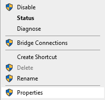
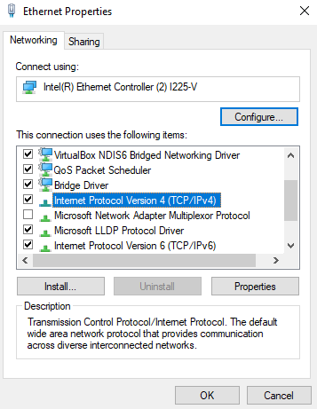
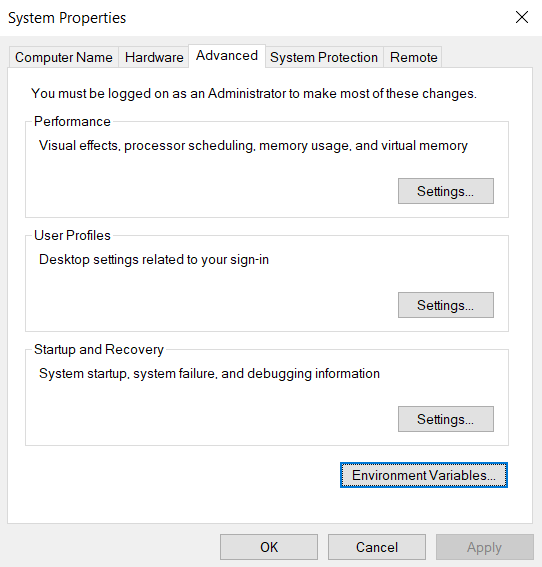

PC Setup Guide#
This is a guide for setting up a PC or laptop for use with a Raspberry Pi configured with Raspberry Pi Streaming Setup for exploreHD.
Configure Device Ethernet#
This step is necessary to set the IP of your device in the local network provided by the Raspberry Pi over ethernet.
Windows
Under Settings/Network & Ethernet, select Ethernet

Under Related Settings on the right, select Change Adapter Options

Find the adapter named Ethernet with the subtitle of Unidentified Network

Right-click the adapter and select Properties

Locate Internet Protocol Version 4 (TCP/IPv4) and select Properties

Edit the menu to look like the following:

Click OK to apply changes. This should now allow you Pi to identify your Windows device under the correct ip address to stream data to.
Install GStreamer#
Note
This step is optional if using QGroundControl
Windows
Download the gstreamer framework from here: http://gstreamer.freedesktop.org/data/pkg/windows. The recommended version is 1.18.1.
Downloads:
Important
Gstreamer would automatically install in the D drive if you have more than one drive on your PC. You can change it to the C drive when you do custom installation.
If you install it on the D drive, just keep note of that when you set up your environment variables below.
If in doubt of which install to use, download the 64-bit version, as this is more common.
Note
Make sure you update the PATH in Environment Variable after installing it on Windows.
Environment Variable Setup
Right-click the Windows icon in the taskbar and select System
Under Related Settings, select Advanced System Settings

Select Environment Variables

Highlight the variable Path by clicking on it and then click ‘Edit…’
A new window should pop up and you want to click on
Newand add a path to your bin folder to the list. In this case, it’sC:\gstreamer\1.0\mingw_x86_64\bin

After that, click OK on both windows and you should be ready to go!
To test the gstreamer setup, open CMD and run the following:
gst-launch-1.0 --version
This should result in an output similar to:
gst-launch-1.0 version 1.16.2
GStreamer 1.16.2
https://launchpad.net/distros/ubuntu/+source/gstreamer1.0